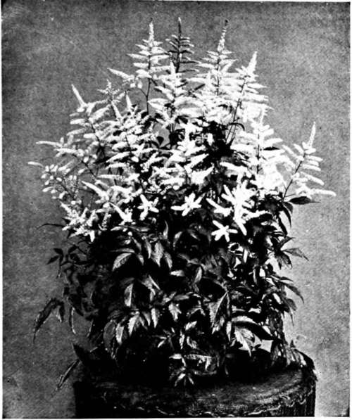

XXXVII. The Amateur Gardener's Implement Outfit
Description
This section is from the book "Indoor Gardening", by Eben E. Rexford. Also available from Amazon: Indoor Gardening.
XXXVII. The Amateur Gardener's Implement Outfit
IN order to facilitate work among her plants, and lighten the labor of caring for them as much as possible, every amateur gardener ought to provide herself with a watering-pot, spray-pump, florist's syringe, and a stiff-bristled scrubbing-brush. Also, a thermometer. There will be other things to add from time to time, but these are the important ones that will come into daily use, and without which a good deal of unnecessary work will have to be done.
The ordinary watering-pot does not have a very long spout when it comes from the store. I would advise taking it to the tin-smith and have an extension added to the original spout, making one, when this is done, at least two feet in length. This will enable you to apply water easily to plants standing in the rear of others, that could not be reached effectively with a short-spouted pot. Give one with a long spout a trial and you will never be satisfied with the old kind. In buying a pot, you will find it economy to invest in one of galvanized iron. This will not rust like the ordinary tin pot. It will outlast three of that kind, and therefore prove considerably cheaper in the end.
Astilbe.
A spray-pump ought to be in every amateur gardener's outfit. With it, the work of showering one's plants is an easy operation, and it can be done much more effectively than in any other way. These pumps are light, but strongly made, and are of such easy operation that a child can use them. The plunger is worked with one hand, while the hose is guided by the other. The pump itself is dropped into a pail of water; a clamp on the outside, resting on the floor, enables one to hold it firmly in place, under the foot, while you are operating it. The nozzle can be regulated to throw a mistlike spray, or a stream, and the hose enables you to work up under plants, in corners, and anywhere that water is needed, with perfect ease. You will find use for such a pump every day. It is well worth while to have one for the application of insecticides if one had no other use for it. These pumps are of brass, so substantially made that they will last a life-time. The hose will wear out in time, but it can be replaced at slight expense. Beyond this the cost of repairs will be next to nothing. A pump of this kind will prove useful in many ways outside the plant-room and the window-garden. Never depend on rubber atomizers, or little, cheap hand-sprayers for use among your plants, if you want to do effective work there. A florist's syringe will not be needed for regular use among plants when one is the owner of a spray-pump, but it will come in play to most excellent advantage in the use of insecticides, where it is not necessary to make a general application. By its use whatever remedy is advisable can be applied directly to the plant needing it, without interfering with others. Like the pump advised, a good brass syringe will last a life-time. It will be found especially useful in the preparation of emulsions, which require rapid agitation in order to secure a perfect union of the materials used. Insert the nozzle of the syringe into the liquids, operate the plunger rapidly, and there will be speedy results of a most satisfactory nature.
A stiff brush will be needed in scrubbing pots, one stiff enough to make it possible to reach every portion of the pot with equal force, thus removing the slime that is sure to gather on the outside after a little, and to keep everything clean and healthy. Simply washing a pot does very little good. Force must be applied in order to loosen and get rid of the exudations through its pores, in which the germs of disease often lurk.
If you prepare your own potting-soil, you will need a hoe, a spade, an iron-toothed rake, and a wheel-barrow.
The best hoe is one called the Warren, V-shaped, with handle in the center of the blade. The pointed part of it will be found much more effective, in most work, than the wide blade. With it, it is an easy matter to lift, shave, and pulverize sod and other soils that enter into the make-up of a compost for pot-plants.
Your spade should have a thin, sharp blade -one that will enable you to cut through roots easily, and work close to plants that must be lifted and potted without breaking apart the soil,-a result almost sure to happen where the ordinary clumsy tool is used.
The iron-toothed rake will be found extremely effective in working over the compost. It will pulverize it, remove roots and other refuse matter, and stir things up generally as no other tool will.
Let the wheelbarrow be light, but strong, and make sure that it runs easily and smooothly in its bearings. It should have removable sideboards, to facilitate the dumping of soil.
Other tools can be added, from time to time, as one comes across them at the dealer's. They may not be really needed, but if they are practical, and labor can be lightened or expedited by the use of them, it is well to have them.
Continue to: